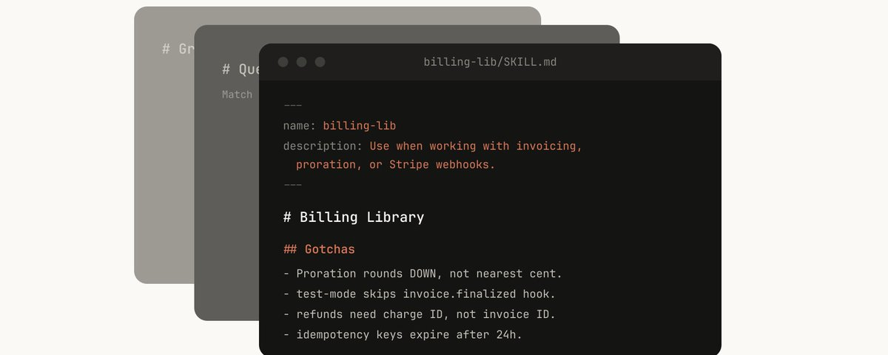

Lessons from Building Claude Code: How We Use Skills
Anthropic 内部几百个 Skills 的用法
先看这五句
- Skills 不是「就是 markdown」。它们是文件夹：脚本、资源、数据、动态 hooks，模型可以探索和操作。
- 好 Skill 干净地落进一类。库参考、产品验证、取数、流程自动化、脚手架、质量审查、CI、runbook、基础设施，九类够用来查缺。
- Gotchas 是最高信噪比。不要陈述模型已经知道的事；把失败点持续写回去。
- description 是给模型的路由条件。它回答「何时触发」，不是内容摘要。
- 小团队检入仓库，规模化走内部 marketplace。先沙盒试用，有牵引再合入；坏的、重复的 Skill 很容易长出来。

这是一份阅读笔记，不是原文转载。Thariq 总结 Anthropic 内部几百个活跃 Skills：什么类型值得做、怎么写才不绑死模型、何时分享。文章也挂在 Claude Blog。
九类 Skills
常见误解是 Skills「就是 markdown」。更有意思的部分是文件夹：脚本、资源、数据，以及可以注册的动态 hooks。编目之后，内部 Skills 会聚成几类；最好的落进一类，含糊的往往骑在几类之间。
| 类型 | 在干什么 | 例子 |
|---|---|---|
| 库与 API | 内部库或模型常踩坑的 SDK，带片段和 gotchas | billing-lib、internal-platform-cli |
| 产品验证 | 怎么证明代码真的在工作，常配 Playwright / tmux | signup-flow-driver、checkout-verifier |
| 取数分析 | 凭证、dashboard id、该 join 哪张表 | funnel-query、grafana |
| 流程自动化 | 重复工作收成一条命令，可把上次结果存日志 | standup-post、weekly-recap |
| 脚手架 | 带自然语言要求、纯代码生成器盖不住的模板 | new-migration、create-app |
| 质量审查 | 确定性脚本 + 对抗审查，可挂 hooks / Action | adversarial-review、code-style |
| CI/CD | 盯 PR、灰度、回滚、cherry-pick | babysit-pr、deploy-service |
| Runbook | 从症状走到多工具调查，产出结构化报告 | oncall-runner、log-correlator |
| 基础设施 | 例行运维，破坏性动作要护栏 | orphans 清理、cost-investigation |
验证类值得单独强调：让工程师花一周把验证 Skills 做扎实，往往比再调模型划算。可以录像看它测了什么，也可以在每一步做可编程断言。
怎么写
- 别陈述显而易见的事。知识型 Skill 要推模型离开默认口味。frontend-design 就是为了躲开 Inter 字体和紫色渐变。
- Gotchas 专节。从真实失败长出来，并持续回写。
- 文件系统即渐进披露。告诉它目录里有什么，签名进
references/api.md，模板进assets/。 - 避免铁路调度。Skill 会被反复复用，指令太死就没法适应当下。
- 想清楚 setup。standup 频道这类配置放
config.json，没有就问；结构化选择题走 AskUserQuestion。 - description 是路由。启动时模型扫的是「每个 Skill 何时该触发」的清单。
- 记忆要放稳。升级 Skill 可能清掉目录里的数据，稳定目录用
${CLAUDE_PLUGIN_DATA}。 - 给脚本，让模型去组合。取数库先备好，模型把回合花在「下一步做什么」，而不是重写样板。
- 按需 hooks。例如
/careful才拦rm -rf/DROP TABLE，不必永远开着。